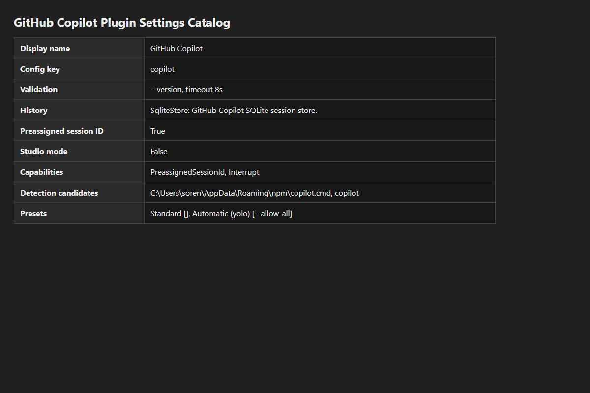
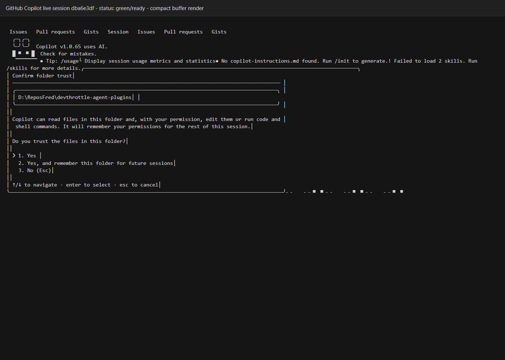

Status: PASS
Captured: 2026-06-26T06:41:22.7110736-04:00
CopilotAgentPlugin as a concrete built-in plugin for GitHub Copilot.CopilotDriver, preserving the verified control contract: interrupt and preassigned session IDs.AgentPluginRegistry now resolves AgentKind.Copilot through CopilotAgentPlugin.dotnet build cc-director.sln --no-restore - Build succeeded, 0 warnings, 0 errors.dotnet test src/CcDirector.Core.Tests/CcDirector.Core.Tests.csproj --no-build --filter "FullyQualifiedName~AgentPluginRegistryTests|FullyQualifiedName~CopilotAgentTests" - Passed: 40, Failed: 0.dotnet test src/CcDirector.Gateway.Tests/CcDirector.Gateway.Tests.csproj --no-build --filter FullyQualifiedName~AgentsEndpointTests - Passed: 18, Failed: 0.scripts\local-build-avalonia.ps1 -Slot 14.http://127.0.0.1:7883.dba6e3df-7c0a-4105-b77a-e7303017afe7 with --allow-all.agent=Copilot, activityState=WaitingForInput, statusColor=green, and driver capabilities PreassignedSessionId and Interrupt.D:\ReposFred\devthrottle-agent-plugins.Copilot plugin settings catalog:

Live Copilot terminal session:
